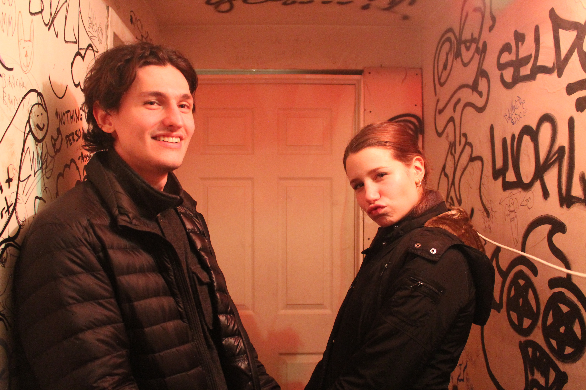

Music
Film
Visual Art
Theatre
Fashion
NEWSLETTER SIGN UP SIGN IN SEARCH
Emily Yacina and Will Sacks backstage at Brooklyn performance space Aviv after playing their set. (Photo/Truman Ports)
Hello Wyrdos!
Welcome to WYRD Magazine, a monthly publication where we provide the inside-look at all things art based in New York City. From artist interviews to photo stories of art events showcasing local work, we aim to be the centralized spot for people with an already existing knowledge of the art world in its beautiful, wyrd glory. That’s right, a publication just for you. Nothing simplified, dumbed down, or spoon-fed and overly explained. A publication for relatively unknown artists and art appreciators that’s all their own. Why WYRD? Wyrd is a word and concept derived from the Anglo-Saxon culture, roughly corresponding to fate or personal destiny, the life and entity of an artist. So not only is it a play on words of the word weird (as I’m sure all of you are in the best way possible), but it relates to what we aim for at WYRD Magazine, to help people along in their personal destiny. So find us online, find us in print, but just find us. Because we’ll be looking for all of you wyrd artists out there. Check back for our first issue, coming out soon.
Cheers!
Truman Ports